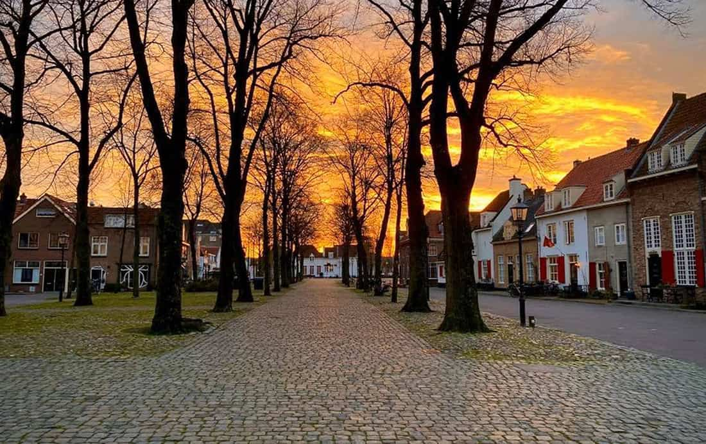
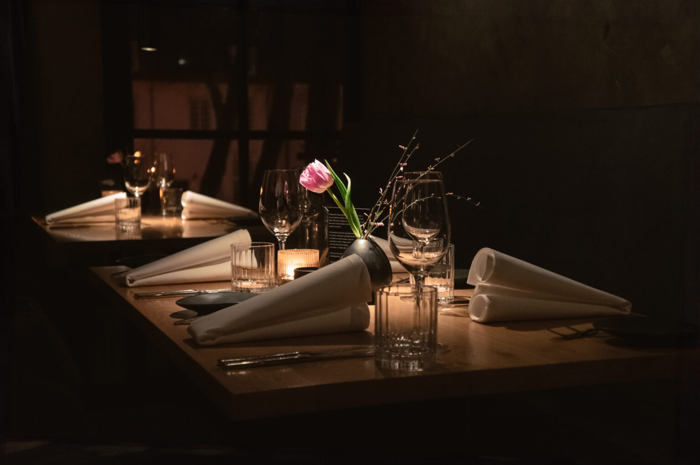
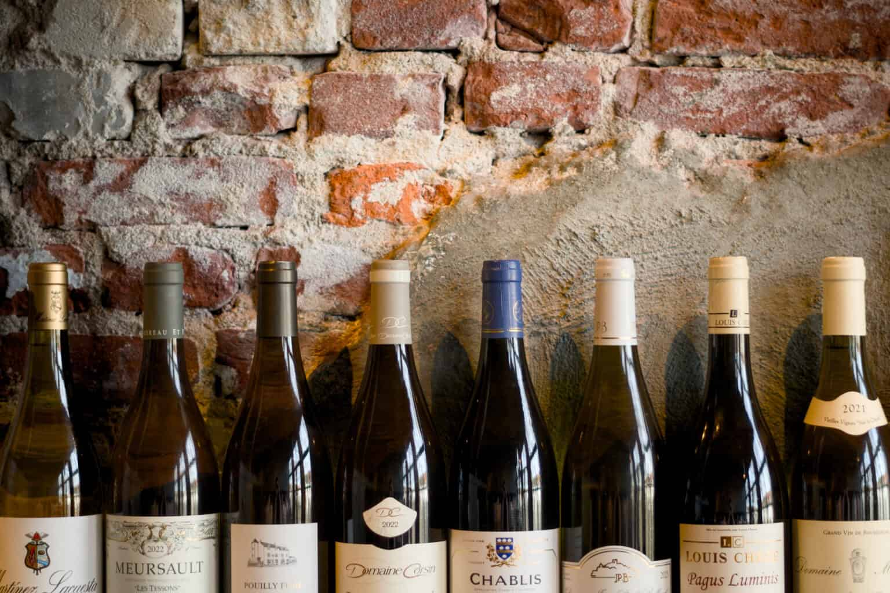
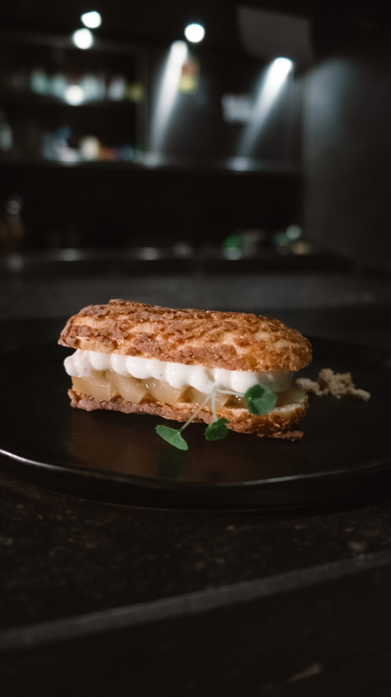
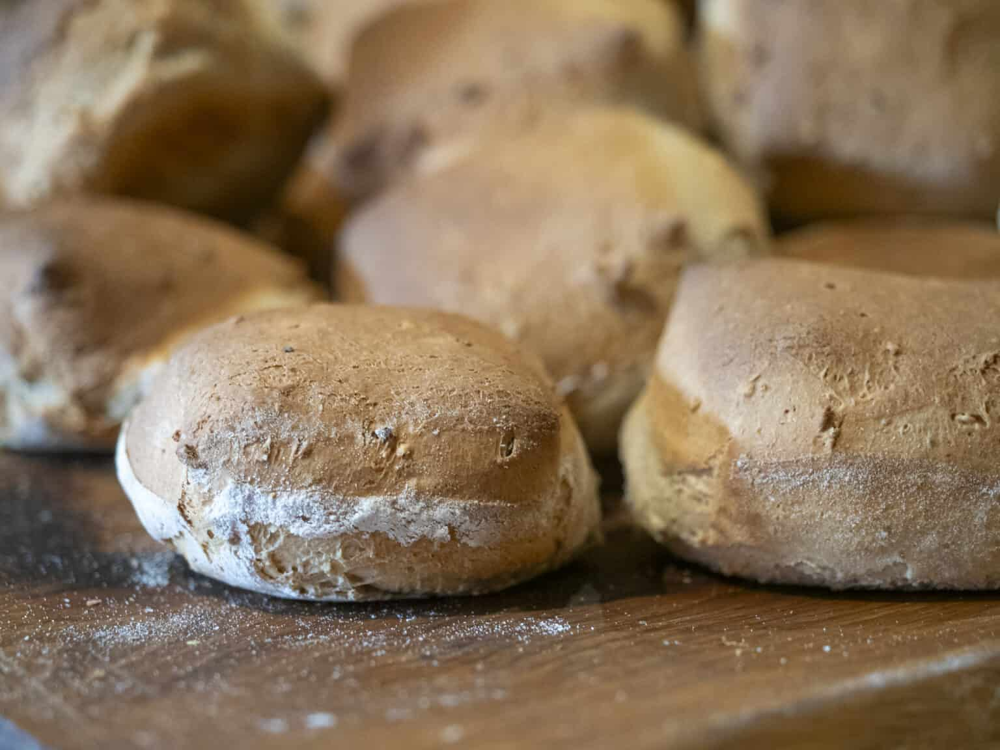
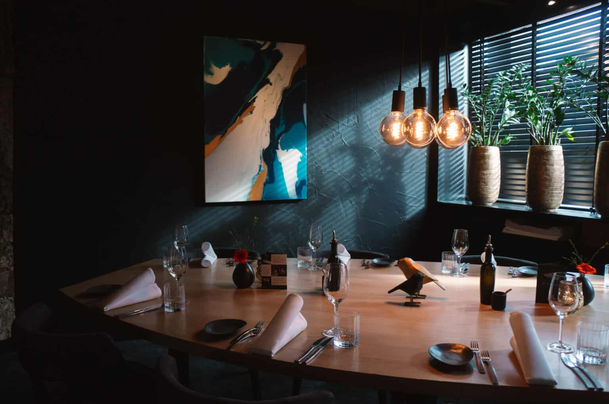
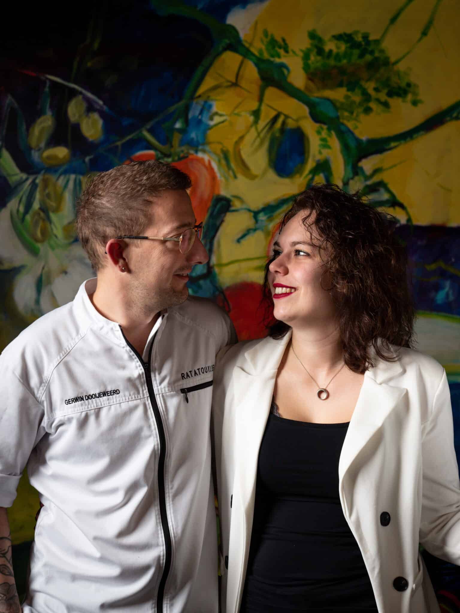

De Vischmarkt
Lindebomen, oude gevels en de Vischpoort. ’s Avonds staat het plein mooi in het licht.

Intiem, gezellig en vooral eerlijk eten, mooie wijnen en gastvrijheid. Aan de Vischmarkt, bij Gerwin & Cindy.
Ratatouille ligt aan de historische Vischmarkt: een plein met mooie bomen en eeuwenoude gevels, met de Vischpoort als best gefotografeerde plek van Harderwijk. Daar vind je ons.
Kom heerlijk dineren of geniet van een uitgebreide zondagslunch. Dieetwensen houden we graag rekening mee: vermeld het bij je reservering. Je begint meteen met de eerste hapjes en amuses uit de keuken.
Tot ziens bij Ratatouille,
Gerwin Dooijeweerd & Cindy Berkenbosch + Team RTTLL


Desembrood, jus of een taart: alles maken we zelf.

Alles is met zorg uitgekozen en door vertrouwde leveranciers gebracht, lang voordat de gasten aan tafel zitten. De wijnen zijn geselecteerd en de koks hebben hun messen geslepen.
Het Nederlandse seizoen is onze leidraad, het liefst lokaal. Maar we maken ook uitstapjes: truffel uit Italië, die mooie Spaanse ham, kaffir limoen of ras el hanout. Smaken die je niet wilt missen.
Dat alles met een mooi stuk vis of vlees en een vleugje liefde en passie: dat is onze keuken.
Op zondagmiddag zijn we exclusief open voor de lunch. Kies voor ons Menu Ratatouille of à la carte. Hoe langer je wilt genieten, hoe eerder we je graag ontvangen. Een lunch voelt vaak nog specialer: een ontspannen middag, en de avond heb je helemaal voor jezelf.
Op kerstavond en eerste kerstdag zijn we open. Reserveer op tijd en vermeld een kaasplankje graag meteen bij je reservering.

Voor een etentje met meer mensen hebben we een prachtige tafel in onze Loge, met dakterras en uitzicht over de daken van Harderwijk.
Voor een bruiloft, jubileum, bedrijfsfeest, vergadering, lunch, diner of uitvaartdiner.
Vraag de mogelijkheden aan
Gerwin stond vanaf zijn zestiende in de keuken en kwam terecht bij De Mandenmaker. In 2004 werd die overgenomen door Wim en Tina Zwaart (voorheen Olivio) en werd het Bistro Ratatouille. Gerwin werkte ook bij Olivio en De Basiliek, en kwam daarna terug bij Ratatouille. Nu is hij chef-kok en runt hij het restaurant samen met Cindy.
Cindy begon acht jaar geleden als studerende gastvrouw, leerde het vak bij De Basiliek en Salentijn in Nijkerk en geeft nu leiding aan de bediening. Ze houdt van eten, van drinken en van paarden.
Kunst aan de muur: in het restaurant hangen verschillende kunstwerken, waaronder het bijzondere werk “Ratatouille” dat bij de opening is gemaakt, en werk van Martijn Poorter en Monique Spapens.
Een cadeaucheque is een belevenis om weg te geven: voor een bedrag naar keuze of een compleet verzorgd all-in menu. Haal hem op in het restaurant of laat hem per post versturen; voor verzending naar een adres in Nederland rekenen we een kleine vergoeding.

Lindebomen, oude gevels en de Vischpoort. ’s Avonds staat het plein mooi in het licht.
Elke dag vers gebakken. Het desem wordt al tientallen jaren in leven gehouden; we kregen het veertien jaar geleden van “Herman”.
Bij de koffie, met zwart zeezout.
Mail naar info@rttll.nl of bel 0341 431 256, ter attentie van Cindy Berkenbosch.